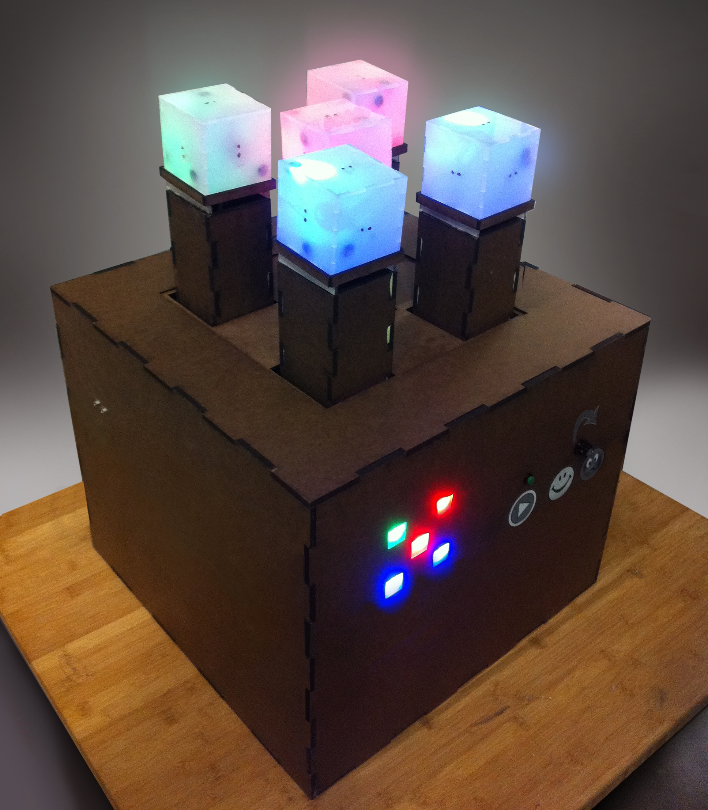

Introducing Disco Cubes: a dynamic, interactive game of lights and colors. Simply plug in the Disco Cubes machine and shake out your hands to begin.

By plugging in the Disco Cubes case, you are telling the machine to stand by and wait for your signal to initiate gameplay. You should see the five squares on the front panel light up in a repeating pattern. At this point, you may adjust the difficulty of the game by turning the difficulty knob, also located on the front panel. Turn the knob towards the happy face for an easy game, or towards the frustrated face for a challenge. The higher the difficulty, the faster the pillars fall during gameplay. After adjusting the difficulty, place the plastic cubes on top of the five pillars and press the green start button to begin the game.
When you press the green start button, you will see the pillars and cubes begin to rise. When they have reached the top of their motion, the pillars will stop moving, and the five squares on the front panel will light up in a static pattern of colors, as shown in the picture above. The computer inside the Disco Cubes machine generates this pattern at random. You should also notice that the cubes on top of the pillars are now lit up. Try picking a cube up, and replacing it on its pillar on a different side. You should observe that by turning the cube on a different side, you have changed the color of the cube. To win the game, simply flip or switch all of the cubes until the pattern of colors they create on top of the pillars is identical to the pattern displayed on the front panel. However, you will notice that once at least one cube on top of the pillars matches its associated square of light on the front panel, the pillars supporting the cubes will begin to descend. Depending on what level of difficulty you have selected, they will fall faster or slower. To win the game, you must use the cubes to match the pattern on the front panel before the pillars sink to the top of the case. But watch out! If you make a mistake placing a cube two or more times, two colors on the front panel display will exchange positions, making your task more difficult. Also, you should notice that placing a cube incorrectly on a pillar causes the cube to vibrate, alerting you that this is not the correct color.
At the end of the game, if the pillars sink to the top of the case before you are able to match the pattern displayed on the front panel, the cubes will turn off and the squares of light on the front panel will once again light up one by one in a repeating pattern. At this point, you are free to readjust the difficulty level and press the green start button to try again. If, on the other hand, you solve the puzzle before the pillars sink to the top of the case, you win the game. In this case, the Disco Cubes machine will congratulate you with a celebratory performance. You should see the cubes turn off one by one, and turn on again one by one. Also, the central pillar and outer pillars will move up and down in an alternating fashion. Enjoy this victory dance; it is well deserved! When the performance is complete, the pillars will sink again to the top of the case, and the cubes will turn off. The squares of light on the front panel will turn on and off sequentially, and you are free to readjust the difficulty level and press the green start button to play again.
Keep your materials organized and well documented, or you risk losing track of important pieces. Also, it gets very chaotic toward the deadline, make sure you keep track of any tools or supplies you purchased, or someone will think its free game!
Ensure that all electrical connections are robust. Hot glue is not always viable solution.
Those who interact with your project will not be gentle. Build a mechanically robust system capable of withstanding rough handling.
Brainstorm multiple ways to implement each idea before starting to build. Don’t feel restricted to what’s available in the lab. Go to random stores/libraries or talk to people to get inspiration.
Keep a strict timeline. Plan a reasonable calendar and keep to it. Don’t start assembling the hardware and software on the day of deadline.
Put more insight into which parts of the machine people would like and which parts would be redundant. Don’t stop thinking while you are building it. Reasonable changes during the prototype phase save time.
Keep it simple, get the core working at an absolute minimum, and build on features from there.
Try something you haven’t done before, but don’t make every part of the project a challenge
Build a COMPLETE model, full pseudo code, and a finished schematic FIRST, it will make the rest of the work infinitely clearer and prevent minor problems from killing the project